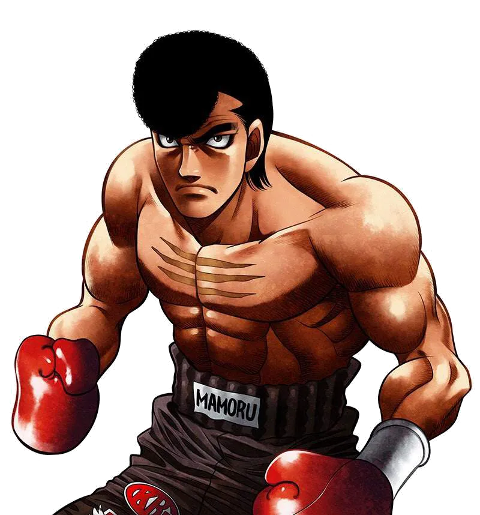
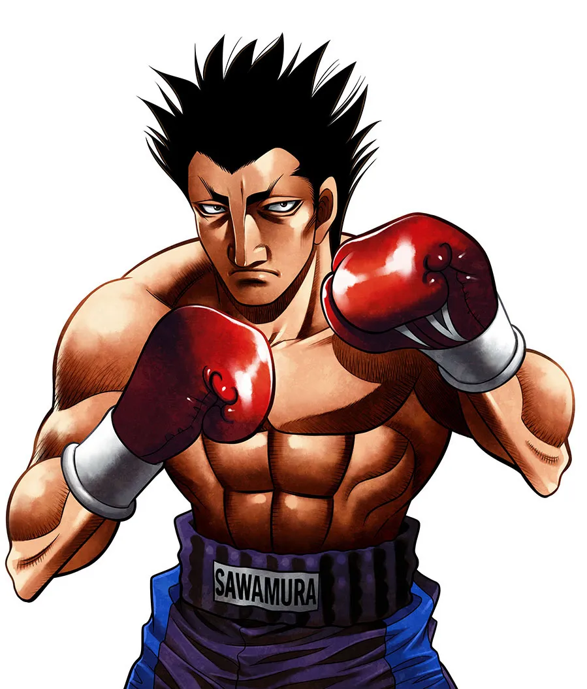

Hi I'm Ippo Makunouchi Let Me Show You People I Met In My Boxing Journey!
"They’re someone who’s always been there for me, offering support during tough times and cheering me on through every challenge. Whether it’s giving me advice or simply being by my side, their kindness and dependability have made a huge difference in my life. I admire their strength and determination, which inspire everyone around them, including me. Having a friend like them reminds me to keep pushing forward no matter what obstacles I face, and I’m truly grateful for their presence in my life."
"They’re one of the most supportive and encouraging people I’ve ever met. No matter how tough things get, they always know how to lift my spirits and keep me focused on my goals. Their determination and positive outlook are truly inspiring, and I feel lucky to have someone like them by my side. Whether it’s in the boxing ring or everyday life, they’ve shown me what it means to be a true friend."
Ippo's Boxing Friends
-

Mamoru
Takamura
Ippo's Sensei
Word of God has it that he's the best boxer in the series. He's described in-story as the ideal boxer, combining athleticism and skill as well as intelligence and instincts. His strength and stamina are almost superhuman and his instincts border on the supernatural. Upon their first meeting, Kamogawa described him as a "diamond that didn't need to be polished", easily able to take the Japanese title at that point already. Kamogawa also believes that Takamura has completely surpassed his teachings and thus often lets him fight however he wants in the ring. He's only had real trouble in three fights so far (his three matches for world belts) and often knocks out his opponent in the first round in showy fashion. Due to his boxing insight, he often serves as the Mr. Exposition during matches of other people.
-
Tatsuya
Kimura
Ippo's Senior
Ippo's senpai and Aoki's best friend. He is the smooth, collected type and a romantic at heart, but trains as hard as anyone. His style incorporates a fast left and faster footwork and is considered by Miyata to have "no weaknesses" yet, it also doesn't have strengths either which creates Kimura's weakness.
-
Masaru
Aoki
Ippo's Senior
Ippo's senpai and Kimura's best friend. Aoki provides much of the gym's comic relief and exercises one of the world's most unusual fighting styles. A few of his signature techniques include the fan-favorite Frog Punch, double punch, an untorqued (ineffective) corkscrew punch, and the utterly ridiculous Lookaway (which has also been adopted by Takamura). In the past, he and Kimura were the toughest high-school thugs around, but now Aoki's real job is at a ramen restaurant. Due to the numerous times being dumped by the pretty girls in high school, he's developed a taste for women with unattractive faces.
-
Manabu
Itagaki
Ippo's Junior
The most recent addition to the roster, the charming Manabu has a prodigy's talent and was the captain of his high school's boxing team. Cheerful and a lover of bad puns (as are the rest of his family), Manabu is a fierce outboxer with extremely high speed and reflexes and whose fighting style is uncanny in its resemblance to Miyata's.
Ippo's Friend And Family
-

Hiroko
Makunouchi
Ippo's Mother
Hiroko is Ippo's widowed mother. She is a very kind and strong willed woman who cares for her son a great deal. She started running the fishing business after her husband, Kazuo, died after saving his friend Sakuma. Though she refuses to attend any of Ippo's matches because she doesn't want to watch him get hurt, she supports his boxing wholeheartedly because she knows how much joy it has brought to his life and how it has helped him with his self-esteem. Since Kazuo's death, Ippo and Hiroko have been more or less alone in the world; so the strength of their family bond is no surprise.
-

Masahiko
Umezawa
Ippo's Friend
Umezawa first appears as a bully in Ippo's school who is constantly tormenting and eploiting him. However, as Ippo begins to get into boxing and grow more as a fighter, Umezawa notices the changes in him and discovers a newfound admiration for the guy he used to push around. He started to watch all of Ippo's fights and invite other delinquents to do so, as they were all boxing fans. After graduation, Umezawa decides to help Ippo by working at the Makunoichis' Fishing Shop so he could focus on his training. Currently he is easily Ippo's 1# fan and one of his best friends.
-

Kumi
Mashiba
Ippo's Crush
Kumi is Ryo Mashiba's sweet-natured, but hard-working and willful younger sister, and as such understands him better than anyone else. She will do almost anything to support her brother and make him happy, including going to his matches even though she doesn't like to see him get hurt. Ippo becomes infatuated with her early on, but didn't have a chance to tell her until more than a year later, when they met in an hospital as patient and nurse some months after the Ippo/Mashiba ring. They become friends and Kumi comes to like Ippo back, but their relationship tends to suffer from their friends' and relatives' constant interference, and also was somewhat strained after Ippo thought she was smitten with Dr. Sanada, until Kumi herself clarified the mistake after their match but didn't get a chance to say that Ippo was the one she really loved. Kumi tends to be modest and shy, but she will stand up for her brother and friends at a moment's notice.
-

Eiji
Date
Signature Move:
Heartbreak Shot.A retired Featherweight boxer and now trainer, Date was the two time Japanese Featherweight Champion and even fought on the world stage. He has been the only fighter to defeat Ippo. He lost to Ricardo Martinez twice, once in the past which is how he got his scar and the second time in an epic fight that showed his great determination.
He's a smart, technically skilled boxer with great experience. Despite the contrast to that, his boxing style is very aggressive. He is good friends with Takamura. After his second loss against Martinez, he passes on the baton to Ippo. -

Ryuhei
Sawamura
Signature Move:
Bullet (an insanely powerful jab) and Flash (a devastating counter-right)As bad as his personality is, he is an absolute genius as a boxer. His natural instincts are great and he's a gifted counter puncher. In fact, his sense for counters is mentioned to be even higher than that of Miyata. His athletic abilities are fairly average, but his high skill, analytical ability and talent more than makes up for it. It's easily possible that he could have won against Ippo, had he been serious about defeating him.
-
Ichirou
Miyata
Signature Move:
Jolt Counter.Miyata is a very skilled outboxer specializing in counters. As a rookie, he was recognized as a genius, although his great abilities stem more from hard work than one might initially believe. He's a very cool-headed and intelligent person. Despite his somewhat cold demeanor, he has a great fighting spirit and is nicer than one might think at first.
-

Takeshi
Sendo
Signature Move:
His Smash punch.Because he's such an excellent fighter, he got rather bored since nobody could satisfy his hunger for an equal. That is, when Yanaoka met him and introduced him to boxing, after resisting one of Sendo's attacks. Easily becoming East Japan Rookie King, he saw Ippo Makunouchi which made him very excited, to say the least.
-
Alexander "Volg"
Zangief
Signature Move:
White Fang.Volg is an extremely talented boxer with superb skill. While he excels at outboxing and taking points, he is forced to adopt a more aggressive infighting style in Japan, in order to attract attention as a foreigner. It is heavily implied that he could be much better than he already is, if he fought in his natural style, which we have yet to see.
-
Ryo
Mashiba
Signature Move:
Flicker Jab, Chopping Right.A highly intimidating character, Mashiba is former Japanese Junior Lightweight champion and OPBF Lightweight champion. He's a vicious outboxer who's most notable for his use of the Flicker Jab. He has exceptional reach and is quite skilled, and not to mention he will do anything it takes to win, even cheating if necessary.
-

Iwao
Shimabukuro
Signature Move:
Giving Opponents a Hyproxia.Iwao is a Japanese Featherweight boxer who challenged Ippo for the belt. Like Ippo, he is a fisherman, possesses incredible strength, and has monstrous stamina. Iwao has the distinction of being the first opponent to discover the Dempsey Roll's weakness. While Iwao ultimately lost the fight, later opponents would use the knowledge gained from the fight to produce a much more solid counter to the Dempsey Roll with much less risk to the defender.
-
Dr.Kazuki
Sanada
Signature Move:
Hien, Tsubame Gaeshi(Returning Swallow).A former JBC Japanese Junior Featherweight champion before relinquishing his title to move up into the Featherweights in order to fight Makunouchi Ippo for his JBC title. He retired due to preferring to continue his dream as a doctor instead of a boxer in the professional ring.
And There’s my Strong Opponents that I Fought Very Hard Until the End!
"Let me tell you about my opponents. They’re someone I truly respect for their incredible skill and unwavering determination. Every time we step into the ring, I can feel their strength and passion for boxing, which pushes me to give my absolute best. They’re not just an opponent but also a reminder of how much there is to learn and grow. Facing them is never easy, but it’s the challenge that drives me forward. Win or lose, I know every match with them will make me stronger."
"Each one of them brings something unique to the ring—different strengths, techniques, and stories that make every fight an unforgettable challenge. Some are powerful and relentless, others are strategic and unpredictable, but all of them share a passion for boxing that I deeply respect. Facing them pushes me to my limits and helps me grow as both a fighter and a person. I know that no matter the outcome, each opponent teaches me something valuable, and for that, I’m truly grateful."